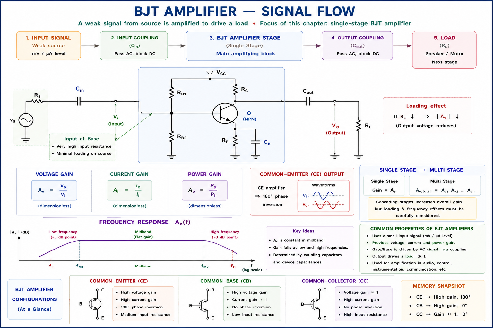
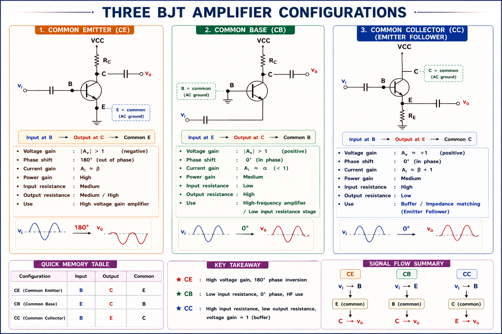
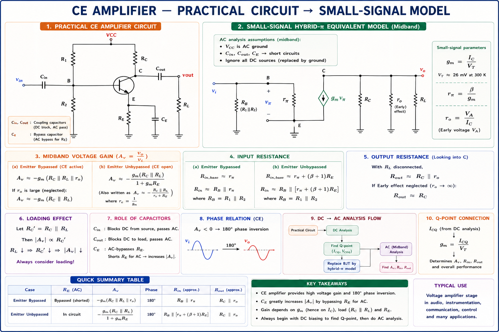
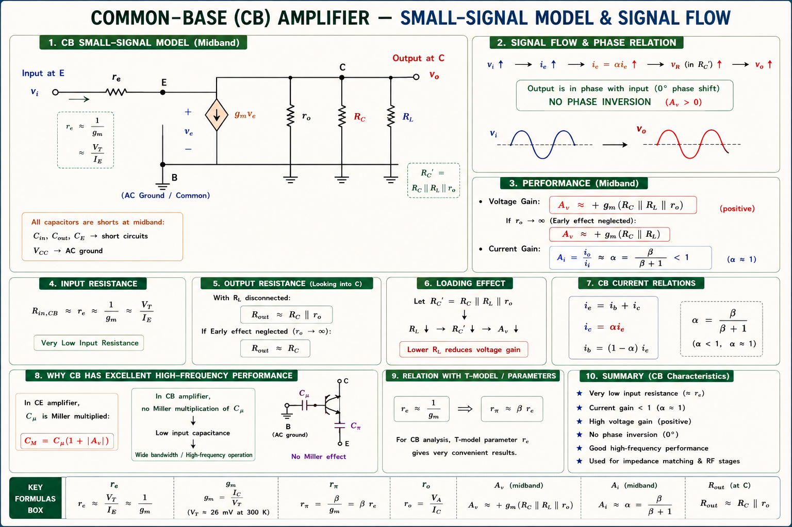
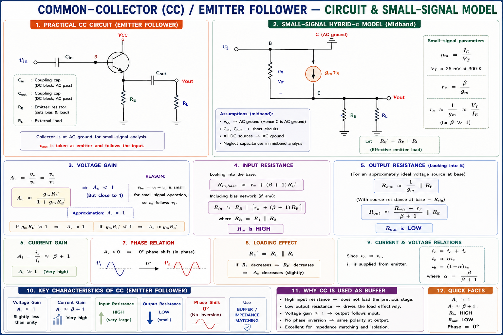
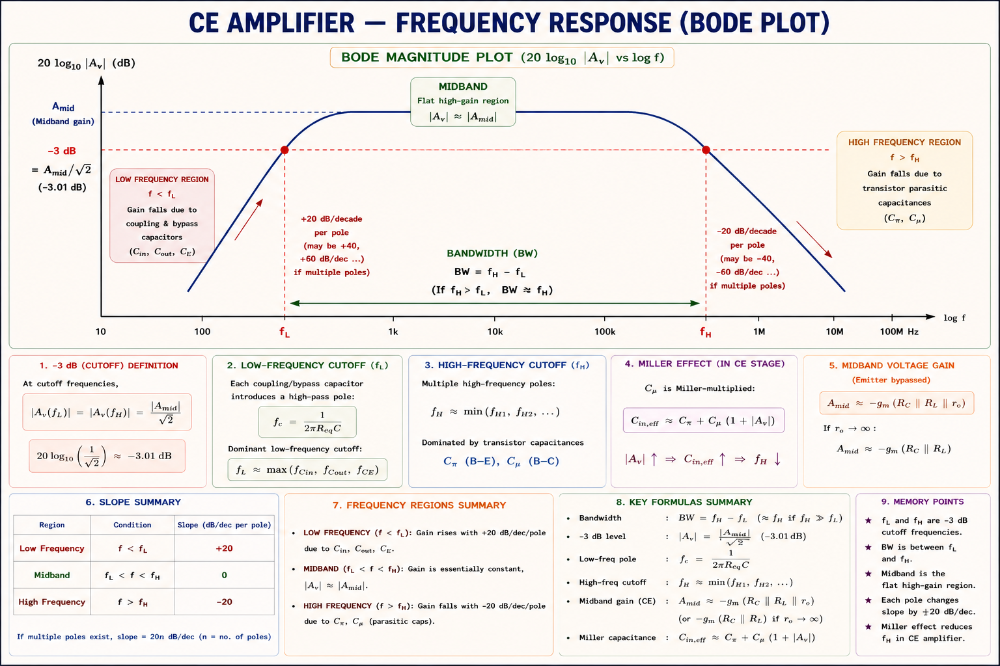
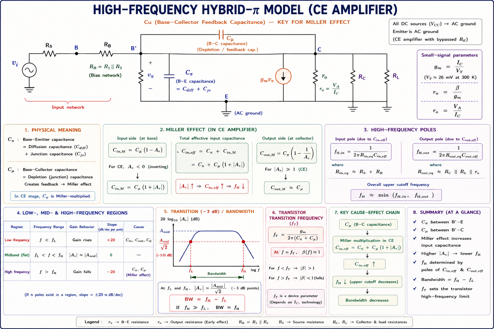
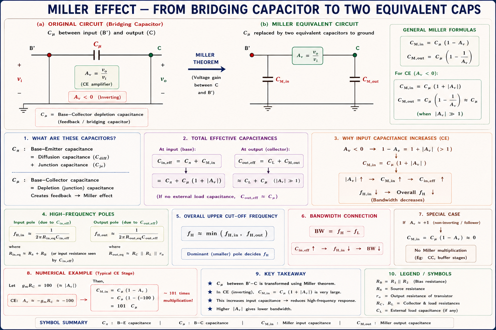

\(C_E\), CB, and CC BJT amplifier configurations — voltage gain, current gain, power gain, input/output resistance, frequency response from low to high bands, and Miller effect — complete coverage with derivations, inline diagrams, and GATE/IES previous year questions.
Every real-world signal is weak. A microphone output is a few millivolts. A photodiode in a fibre-optic receiver generates microamperes. An antenna in a cell phone picks up signals at −100 dBm. Before any processing, decision-making, or driving a loudspeaker can occur, these signals must be amplified to useful levels. The single-stage BJT amplifier is the fundamental building block for this task.[1]
A BJT is a current-controlled current source: a small base current \(I_B\) controls a much larger collector current \(I_C = \beta I_B\). Amplification arises because a small input power at the base controls a large output power delivered from the DC supply. Energy comes from the supply, not from thin air.

A BJT has three terminals: Base (B), Collector (C), and Emitter (E). In any two-port amplifier configuration, one terminal is common to both input and output ports. This gives three distinct configurations, each with fundamentally different characteristics.[1]

Students confuse "common" with "grounded." The common terminal is AC ground (connected to signal ground through bypass capacitor), not necessarily DC ground. The emitter in \(C_E\) has an emitter bypass capacitor \(C_E\) making it AC ground while it can sit at a DC bias voltage.
The Common Emitter is the most widely used BJT amplifier configuration. It provides high voltage gain, high current gain, and a phase inversion of 180° between input and output. Think of it as the "workhorse" amplifier — it is used in audio amplifiers, radio-frequency stages, and pre-amplifier stages everywhere.[1]

The small-signal analysis uses the hybrid-π model where \(g_m = I_C / V_T\), \(r_\pi = \beta / g_m\), and \(r_o = V_A / I_C\) (Early voltage effect). In mid-band, all capacitors are either short (coupling/bypass caps) or open (junction parasitic caps).[1][3]
The negative sign in \(A_v = -g_m R_C\) tells us output is 180° out of phase with input. This is because an increase in \(v_i\) increases \(I_C\), which increases the voltage drop across \(R_C\), thus decreasing \(v_{CE} = V_{CC} - I_C R_C\). More in → less out at collector. This is the hallmark of \(C_E\) stage.
In GATE, \(C_E\) voltage gain is tested in two forms. With finite load \(R_L\):
\(A_v = -g_m(R_C \| R_L)\)
With emitter degeneration resistor \(R_E\) without bypass capacitor:
\(A_v = \dfrac{-g_m R_C}{1 + g_m R_E} \approx \dfrac{-R_C}{R_E}\) (when \(g_m R_E \gg
1\))
The emitter degeneration reduces gain but improves stability, bandwidth, and linearity — a
classic GATE trade-off question.
In the Common Base configuration, the input is applied at the emitter and output is taken from the collector, with the base terminal as AC ground. Think of it as a current buffer: \(I_C \approx I_E\) (since \(\alpha \approx 1\)), so current gain is close to unity. The outstanding property is no phase inversion and exceptionally wide bandwidth because there is no Miller multiplication of \(C_\mu\).[1][2]

The capacitor \(C_\mu\) (base-collector junction) does NOT get Miller-multiplied in CB configuration because the base is AC grounded. In \(C_E\), \(C_\mu\) appears as \((1 + g_m R_C) C_\mu\) at the input — a large capacitor that kills bandwidth. In CB, \(C_\mu\) appears at output only with multiplication factor ≈1. Result: CB bandwidth can be 10–100× greater than \(C_E\) for same device.
| Parameter | Expression | Typical Value / Note |
|---|---|---|
| Voltage Gain \(A_v\) | \(+g_m(R_C \| r_o)\) | +ve; same magnitude as \(C_E\) |
| Current Gain \(A_i\) | \(\alpha = \beta/(\beta+1)\) | ≈ 0.99 for \(\beta\)=100 (< 1) |
| Input Resistance \(R_{in}\) | \(r_e = 1/g_m = V_T/I_C\) | Very low: ~25 Ω at 1 mA |
| Output Resistance \(R_{out}\) | \(R_C \| r_o \approx R_C\) | Similar to \(C_E\) |
| Phase Shift | 0° (non-inverting) | No phase reversal |
| Bandwidth | Highest of all three | Used in RF, wideband amps |
CB has current gain less than 1 (\(\alpha < 1\)) but voltage gain greater than 1. Power gain can still be significant. Students often incorrectly state CB has no power gain. Remember: \(A_P = |A_v \cdot A_i| = g_m R_C \cdot \alpha \approx g_m R_C\) which is large.
The Common Collector (CC) configuration, also called the Emitter Follower, takes input at the base and output at the emitter. The collector is at AC ground (connected to \(V_{CC}\) which is AC ground). The output follows the input with no phase inversion and approximately unity voltage gain — hence the name "follower." Its extraordinary feature is very high input resistance and very low output resistance, making it the ideal impedance buffer.[1][2]

The \(R_{in} \approx \beta R_E\) result is powerful. A 10 kΩ emitter resistor with \(\beta\)=100 gives \(R_{in} \approx 1\) MΩ. The output resistance \(R_{out} \approx 1/g_m\) at 1 mA bias is just 26 Ω. So CC takes a high-impedance source, buffers it, and drives a low-impedance load without loss of signal. This is the impedance transformation function.
| Parameter | \(C_E\) | CB | CC (Emitter Follower) |
|---|---|---|---|
| Input Terminal | Base | Emitter | Base |
| Output Terminal | Collector | Collector | Emitter |
| Common Terminal | Emitter | Base | Collector |
| Voltage Gain \(A_v\) | High: \(-g_m R_C\) | High: \(+g_m R_C\) | ≈ +1 (unity) |
| Current Gain \(A_i\) | High: \(-\beta\) | Low: \(\alpha \approx 1\) | High: \(+(\beta+1)\) |
| Power Gain \(A_P\) | Highest | Moderate | Moderate |
| Input Resistance | Moderate: \(r_\pi\) | Very Low: \(r_e = 1/g_m\) | Very High: \(\beta R_E\) |
| Output Resistance | Moderate: \(R_C\) | High: \(R_C\) | Very Low: \(1/g_m\) |
| Phase Shift | 180° (inverting) | 0° (non-inverting) | 0° (non-inverting) |
| Bandwidth | Moderate | Highest (no Miller) | High |
| Primary Use | General amplification | RF / wideband | Buffer / impedance match |
\(C_E\) = Complete amplification (V, I, P all high), Excellent overall. CB = Bandwidth winner. CC = Current follower, buffer. Remember: the "odd one out" in each category: \(C_E\) is the only inverting config; CB has the only sub-unity current gain; CC has the only near-unity voltage gain.
The voltage gain of a BJT amplifier is not constant at all frequencies. The gain-vs-frequency characteristic, called the frequency response, has three distinct regions: low-frequency, mid-band (flat region), and high-frequency. The bandwidth is defined by the half-power (−3 dB) frequencies \(f_L\) and \(f_H\).[1][3]

At low frequencies, the coupling capacitors (\(C_{in}\), \(C_{out}\)) and the emitter bypass capacitor (\(C_E\)) are not short circuits. Their reactance \(X_C = 1/(2\pi f C)\) becomes large, impeding signal flow and reducing gain. Each capacitor creates a lower −3 dB corner frequency.[1]
The emitter bypass capacitor \(C_E\) dominates the low-frequency roll-off in \(C_E\) amplifiers. This is because the resistance it sees \((R_E' \approx 1/g_m)\) is very small — so even a moderate \(C_E\) gives a high corner frequency. The GATE question: "Which capacitor primarily determines \(f_L\)?" Answer: always \(C_E\). To lower \(f_L\), increase \(C_E\).
Below \(f_L\), each capacitor acting as a high-pass filter contributes a +20 dB/decade slope. The gain magnitude drops as: \(|A_v(f)| = |A_{v,mid}| \cdot \dfrac{f/f_L}{\sqrt{1 + (f/f_L)^2}}\). At \(f = f_L\), gain = \(A_{v,mid}/\sqrt{2}\) = −3 dB point.
In the mid-band region, all coupling and bypass capacitors behave as short circuits (very low reactance), and all junction parasitic capacitors (\(C_\pi\), \(C_\mu\)) behave as open circuits (very high reactance). The circuit reduces to its simplest form, and the gain is maximum and flat.[1]
When a question gives an amplifier circuit and asks for gain without specifying frequency: assume mid-band. Apply all short/open rules above, then use the simplified model. If the question mentions "at low frequency" or "at high frequency," then you must include the relevant capacitors.
At high frequencies, the internal BJT junction capacitances — \(C_\pi\) (base-emitter) and \(C_\mu\) (base-collector, also called \(C_{bc}\) or \(C_{ob}\)) — are no longer open circuits. They provide low-impedance paths that bypass the signal, causing gain to roll off at −20 dB/decade per pole.[1][3]

\(f_T\) is the frequency at which the BJT's short-circuit current gain \(\beta(f) = 1\) (0 dB). It is a device property. The amplifier's \(f_H\) depends on \(f_T\) and circuit conditions. For a \(C_E\) stage: \(f_H \approx f_T / (\beta_0 (1 + g_m R_C'))\). Reducing \(R_C\) increases bandwidth but reduces gain — the gain-bandwidth product \(A_v \cdot BW \approx g_m / (2\pi C_\mu)\) is approximately constant.
The Miller Effect is one of the most important and elegant concepts in amplifier theory. It explains why the feedback capacitance \(C_\mu\) in a \(C_E\) amplifier appears enormously magnified at the input, severely limiting bandwidth. It was first described by John M. Miller in 1920.[1][2]
Consider a capacitor \(C_\mu\) connected between the input node (B') and output node (C) of an inverting amplifier with voltage gain \(K = -g_m R_C\). The current through \(C_\mu\) from B' to C is:

If \(g_m = 40\) mA/V, \(R_C = 5\) kΩ, and \(C_\mu = 2\) pF, then the Miller capacitance is \(C_{M,in} = 2(1 + 40 \times 10^{-3} \times 5 \times 10^3) = 2 \times 201 = 402\) pF. This 402 pF at a source resistance of, say, 1 kΩ gives \(f_H = 1/(2\pi \times 1000 \times 402 \times 10^{-12}) \approx 396\) kHz — while without Miller the same 2 pF would give 79.6 MHz. Miller effect kills bandwidth by a factor of 200×!
Miller effect is absent or negligible in three situations:
1. CB configuration: base is AC ground; \(C_\mu\) is from input (E) to base
(ground), with no gain multiplication.
2. Cascode amplifier: upper CB stage presents very low impedance at collector
of lower \(C_E\), making \(K \approx 0\) for \(C_E\) stage, so \(C_{M,in} = C_\mu(1-0) =
C_\mu\).
3. Emitter Follower (CC): voltage gain ≈ +1, so \(C_{M,in} = C_\mu(1-1) = 0\).
No Miller cap!
That is why cascode and CB stages are used in wideband / RF amplifiers.
Step 1: Find \(g_m\).
\(g_m = \dfrac{I_C}{V_T} = \dfrac{1 \times 10^{-3}}{26 \times 10^{-3}} = 38.46\) mA/V
Step 2: Find \(r_\pi\).
\(r_\pi = \dfrac{\beta}{g_m} = \dfrac{100}{38.46 \times 10^{-3}} = 2.6\) kΩ
Step 3: Find effective load \(R_C'\).
\(R_C' = R_C \| R_L = 4.7 \| 10 = \dfrac{4.7 \times 10}{4.7 + 10} = 3.197\) kΩ
Step 4: Voltage Gain (mid-band).
\(A_v = -g_m R_C' = -38.46 \times 10^{-3} \times 3197 = \mathbf{-123}\)
Step 5: Input resistance at base.
\(R_{in,base} = r_\pi = 2.6\) kΩ
Step 1: Miller capacitance at input.
\(C_{M,in} = C_\mu(1 + g_m R_C') = 1 \times (1 + 38.46 \times 10^{-3} \times 3197) = 1 \times
124 = 124\) pF
Step 2: Total input capacitance.
\(C_{in}' = C_\pi + C_{M,in} = 10 + 124 = 134\) pF
Step 3: Thevenin resistance seen by \(C_{in}'\).
\(R_{th} = r_\pi \| (R_S \| R_1 \| R_2) = 2.6 \| (1 \| 22) = 2.6 \| 0.956 = 0.706\) kΩ
Step 4: Upper cut-off frequency.
\(f_H = \dfrac{1}{2\pi \times 0.706 \times 10^3 \times 134 \times 10^{-12}} = \dfrac{1}{2\pi
\times 94.6 \times 10^{-9}} = \mathbf{1.68\ \text{MHz}}\)
The BJT has \(f_T = 300\) MHz and \(\beta_0 = 150\) at low frequency. The magnitude of the short-circuit current gain \(|\beta(f)|\) at 100 MHz is approximately:
Key formula: \(f_\beta = f_T / \beta_0\) is the \(\beta\)-cutoff frequency. At \(f \gg f_\beta\): \(|\beta| \approx f_T / f\). At \(f = f_T\), \(|\beta| = 1\).
An emitter follower (CC amplifier) has \(\beta = 100\), \(r_\pi = 2.5\) kΩ, source resistance \(R_S = 5\) kΩ, and \(R_E = 10\) kΩ. Find the output resistance \(R_{out}\).
Critical insight: \(R_{out}\) of CC is dominated by \((r_\pi + R_S)/(\beta+1)\) — the source and base resistances are "divided down" by \(\beta+1\) as seen at the emitter. This is why CC has very low \(R_{out}\).
Which of the following statements is correct for Common Base (CB) versus Common Emitter (\(C_E\)) BJT amplifier stages?
In CB, \(C_\mu\) (collector-base cap) appears from input (E) to base (AC gnd), with no amplification between these nodes, so no Miller multiplication. In \(C_E\), \(C_\mu\) appears from B to C with gain K = −gmRC, creating a large Miller capacitance that reduces bandwidth.
A \(C_E\) amplifier has \(C_\mu = 2\) pF and a mid-band voltage gain of magnitude 80. The equivalent Miller input capacitance \(C_{M,in}\) is:
Note: \(C_{M,in} = C_\mu(1 - K) = C_\mu(1-(-80)) = 81 C_\mu = 162\) pF. Use \((1+|A_v|)\) when gain is inverting.
Have a doubt about \(C_E\), CB, CC amplifiers, Miller effect, or frequency response? Ask below:
\(A_v\) = −gmRC (inverting). \(A_i = \beta\). \(R_{in} = r_\pi\). High gain, moderate BW. Dominant in audio/signal amps. Miller effect limits \(f_H\).
\(A_v = +g_m R_C\) (non-inverting). \(A_i\) = \(\alpha\) < 1. \(R_{in} = \frac{1}{g_m}\) (very low). Widest BW (no Miller). Used in RF, wideband amps.
\(A_v \approx +1\) (unity, non-inverting). \(A_i = \beta + 1\) (high). \(R_{in} = \beta R_E\) (very high). \(R_{out} = \frac{1}{g_m}\) (very low). Ideal buffer/impedance converter.
\(C_{M,in} = C_\mu(1 + g_m R_C)\). Feedback cap appears multiplied by (1+gain) at input. Only \(C_E\) is affected. CB: no Miller. CC: zero Miller.
Caused by \(C_{in}\), \(C_{out}\), \(C_E\). Dominant pole: \(C_E\) bypass cap (smallest resistance seen). At \(f_L\): gain = \(A_v\)/√2 (−3 dB). +20 dB/dec slope below \(f_L\).
Caused by \(C_\pi\), \(C_\mu\) (junction caps). \(f_H = \frac{1}{2\pi\tau_H}\). \(\tau_H = (C_\pi + C_{M,in}) R_{th}\). \(f_T = \frac{g_m}{2\pi(C_\pi + C_\mu)}\) is BJT unity-gain frequency.
Transconductance: \(g_m = \frac{I_C}{26 \text{ mV}}\) at 300K. \(r_\pi = \frac{\beta}{g_m}\). \(r_o = \frac{V_A}{I_C}\). These three parameters define the entire small-signal behaviour.
Single stage amps appear in almost every GATE EC paper. Focus: gain formulas, Miller effect, \(f_H\) calculation, CB vs \(C_E\) bandwidth comparison.
Adding \(R_E\) (no bypass cap) in \(C_E\): \(A_v\) = −gmRC/(1+gmRE) ≈ −\(R_C\)/\(R_E\). Reduces gain but improves linearity, stability, bandwidth. Classic trade-off.
Multi-Stage Amplifiers — cascading \(C_E\), CB, CC stages; overall gain, input/output impedance; direct coupling; differential amplifiers; the cascode configuration and how it overcomes Miller effect; Darlington pair — complete GATE and IES analysis.
All technical content is derived from the following standard textbooks and learning resources. All explanations, derivations, diagrams and examples are original to Aarova AI.